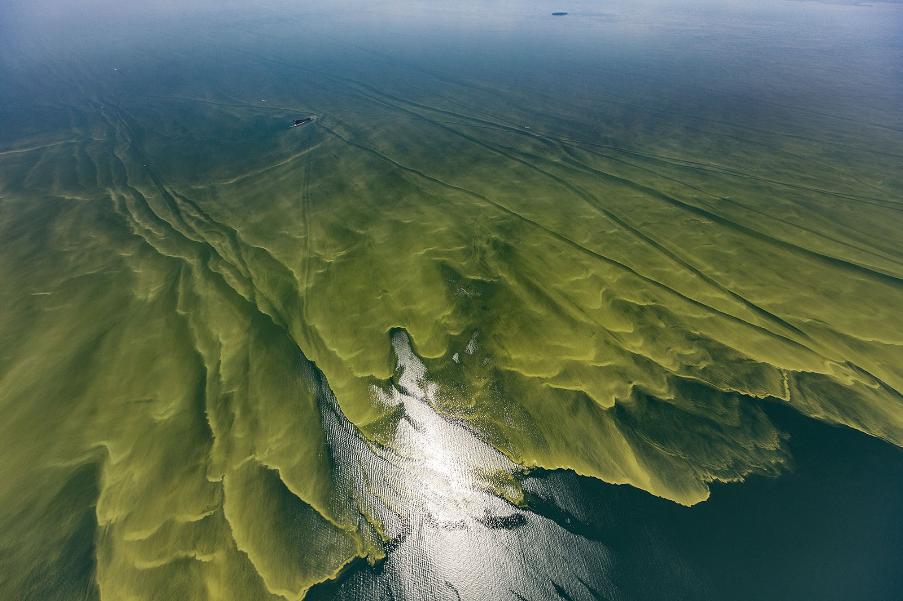
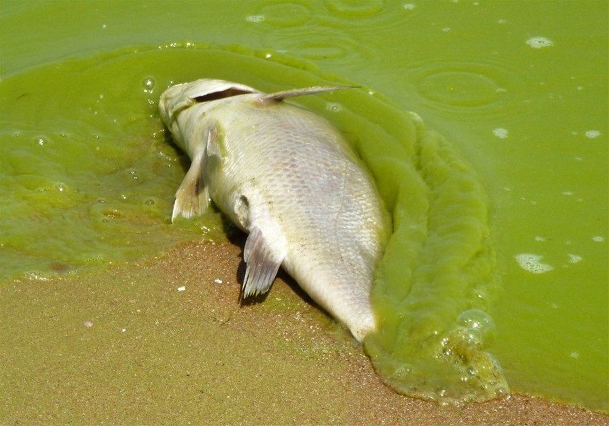

Welcome to Real World Problems
Scroll down to explore more
(Click images to enlarge)
Scroll down to explore more
(Click images to enlarge)
A real-world problem I have selected is Lake Erie's very powerful and harmful algal blooms. Algal blooms can create "dead zones" for fish, and hurt nearby water bodies' quality. 
Lake Erie's extreme algal blooms are mainly caused by nearby farmers using heavy amounts of pesticides, of which runoff into Lake Erie, increasing the levels of phosphorus (on of the main algae-making chemicals).
This real world problem matters because our water quality can affect many things, ranging from nasty swimming conditions to loss of aquatic life. Not only is it an unpleasant sight and smell, this poses a threat to the existence of Lake Erie itself.
In order to solve Lake Erie's excessive algal bloom levels, we could implement nano-"bots" to filter out the phosphorus chemicals in places where the water meets land or other neighboring bodies of water. It could emit a specific frequency that would drive surrounding fish and aquatic life as to not let them consume the nano-"bots" or get harmed by them. Another solution is to set filters in place along the boundaries of the lake (where land meets water) that limit the amount of phosphorus from the run-off and pesticides that farmers spray on crops to keep away insects that harm their harvest. Fish and land animals could get caught in these filters, so they could also emit a specific frequency to push the fish and life away from them. These solutions could help limit the amount of runoff phosphorus from pesticides from surrounding farmland, and keep the algae amount under control.
In conclusion, Lake Erie's algal bloom issue is a real world problem, posing a threat to water quality and aquatic life. It smells, looks, and in general is just bad. Implementing phosphorus-consuming nano-"bots" or phosphorus filters can help keep chemicals and pesticides out, while still letting water get in.